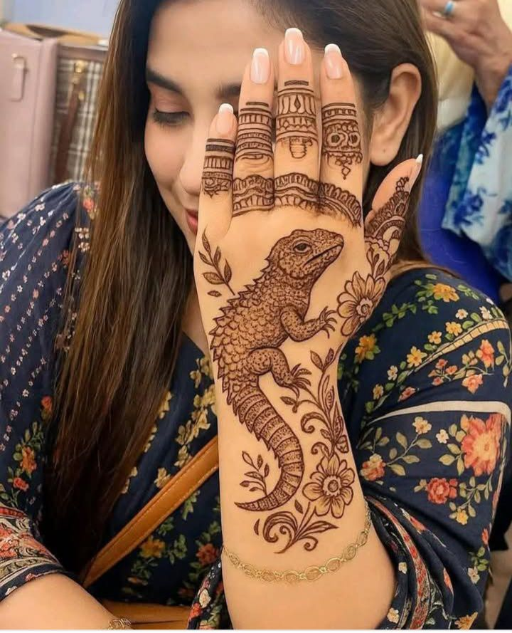

Float propertyes:
A woman with a deep love for
traditional art and nature sits quietly under the warm afternoon sun, preparing her tools for a unique form of
expression — mehendi. But today, instead of the usual floral patterns or decorative motifs, she chooses to honor
a
creature from the wild: the Shanda, a striking member of the golf reptile family. This rare lizard, known for
its
tough scales and desert survival skills, has long fascinated her. With practiced hands and an eye for detail,
she
begins to bring the Shanda to life on her skin using only natural henna paste. She outlines its sturdy tail
curling
hellow brother খুলনায় যে পরিমাণে মাদক অস্ত্র খুনখারাবি শুরু হয়েছে তাতে করে সমগ্র বাংলাদেশের ভিতরে এক নম্বরে আছি আমরা প্রশাসনকে দৃষ্টি আকর্ষণ করে বলছি খুলনাকে রক্ষা করুন